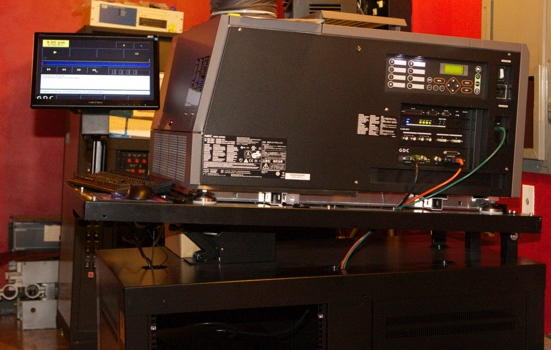

Movie "ingested" at open bay via portable internal hard drive and stored in "raid drive" configuration on 31tb drives as seen below open bay.
DIGITAL PROJECTOR BY NEC

Featuring a 3000 watt xenon bulb programing screen to left digital server (as seen to left) bottom left.
GOETZ 2
GOETZ 3
The Digital Era began , Tuesday in Goetz 1. The evening's feature: “New Years' Eve.” All theatres presented DIGITAL PROJECTION - Sight & Sound - , Friday. Featured: "Alvin & the Chipmunks: Chipwrecked", "Sherlock Holmes: Game of Shadows" and “New Year's Eve.”